Grub
Wrench. Hard hat. Bad ideas.
Rips out dead servers to make room. Believes every problem is a loose bolt. Wants to turn it off and on again.
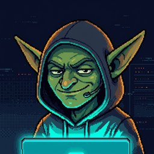
agentsgoblins.aiNew ticket from the basement
A server rack coughed up three goblins. They have wrenches, a router and zero patience for bad AI answers. Join the horde and grab the free Goblin Prompt Pack.
Get the free pack ▶Free. Name, email and phone to unlock. No spam from the basement.
We crawled out of a dead rack in an abandoned data center. It was cold, dark and, somehow, still plugged in. Nobody asked us to run an account. We run it anyway.
Wrench. Hard hat. Bad ideas.
Rips out dead servers to make room. Believes every problem is a loose bolt. Wants to turn it off and on again.

Glasses. Clipboard. A burnt router.
Swears he will make the router talk. Reads every prompt twice and sighs. Wants to keep everything, just in case.

Hood. Laptop. On lookout duty.
Sits on the air conditioner and watches the dark. Somebody has to stay awake. Mostly wants to eat.
Episode 2 update: nobody commented a name, so the goblins drafted the first six followers. Welcome to the horde: @victor_automates, @mcautomate, @tajnyslipy, @rinraroyl, @anaar_net and @stck.wrld. Follow the account and you walk out of the next server with your @ over your head.
83 of you asked to be a goblin. In episode 3 the old server flooded and every one of you walked out, dressed the way you asked. Find your card.
83 goblins
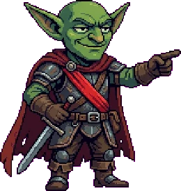
WORK · Squad leader
Squad LEADER: a proud commander goblin with a red commander sash and a short cape, pointing forward, confident
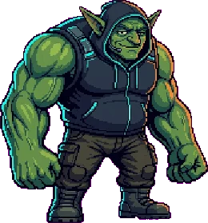
WORK · Big and strong
HUGE, very big and strong muscular goblin, twice as wide as a normal goblin, enormous arms, gentle smug face

WRITING
Big and strong muscular goblin, broad shoulders, flexing

GROWING AN ACCOUNT
Big tall heavy goblin, round belly, strong arms

THE TRUTH
Big bulky goblin with thick arms and a wide stance
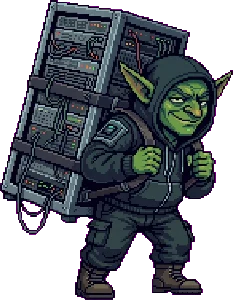
GROWING AN ACCOUNT
Strong goblin carrying a heavy metal server rack on his back
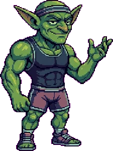
FIXING THINGS
Athletic muscular goblin in a tank top, talking with one hand raised, sporty headband
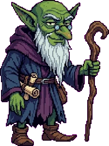
WORK
OLD elder genius goblin with a long white beard, tiny round glasses and a walking stick
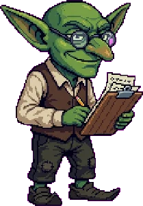
DINNER / GROCERIES
Very smart goblin with glasses holding a clipboard and a pencil
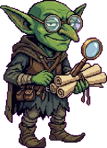
WORK
Researcher goblin with big round glasses, holding a magnifying glass and scrolls
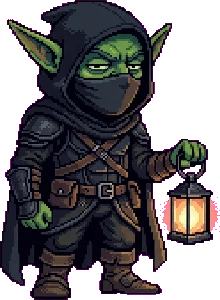
GROWING AN ACCOUNT · The Shadow, night watch chief
A night-watch chief goblin with a black hood and a dark face mask over the mouth, holding a lantern
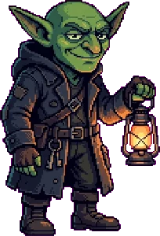
WRITING · Night watch
Night watch goblin in a dark coat holding a lantern
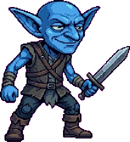
WORK · Night watch
BLUE-skinned goblin training with a short sword

THE LONE GOBLIN · The lone goblin
Evil, lonely, dangerous goblin with glowing RED eyes, dark ragged cloak, menacing

DINNER / GROCERIES · Leads his own crew
Goblin crew leader with a bandana and a confident smirk, arms crossed

FIXING THINGS · Korg, red goblin warlord
A strong RED-skinned goblin warlord in scrap-metal armor with a scrap axe
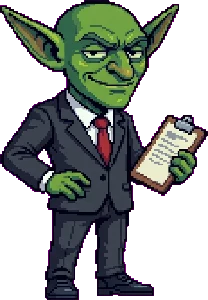
WORK · The Manager
Manager goblin in a business suit and tie holding a clipboard

DINNER / GROCERIES
Mad-scientist goblin in a lab coat holding a glowing green reactor core
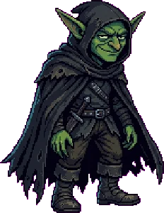
DINNER / GROCERIES
Dark brooding goblin in a black hooded cape, doom vibe

WRITING
Goblin in medieval knight armor with a small shield

DINNER / GROCERIES
Goblin wearing a mask made of green plant leaves covering his whole face, and a t-shirt with LOW CORTISOL written on the chest (the only text allowed)

DINNER / GROCERIES
Soldier goblin wearing a military helmet and camo vest
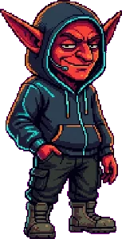
FIXING THINGS
RED-skinned goblin with a cheeky grin

FIXING THINGS
Giant titan goblin, very tall and massive

WRITING
GLITCHY goblin: parts of his body are shifted with glitch pixel artifacts and RGB split
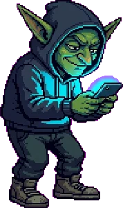
HOMEWORK
Goblin hunched over looking at a smartphone, face lit blue by the screen
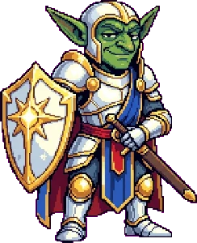
THE TRUTH
Paladin goblin in shiny white-gold armor with a shield
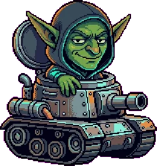
WRITING
Goblin riding inside a tiny tank, head popping out of the hatch
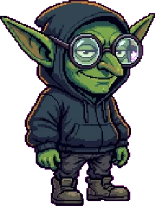
WORK
TINY goblin with enormous oversized glasses

HOMEWORK
King goblin with a golden crown surrounded by flames
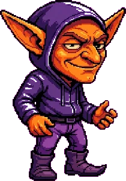
THE TRUTH
ORANGE-skinned goblin wearing purple clothes
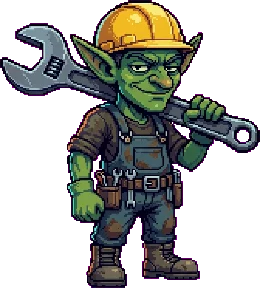
GROWING AN ACCOUNT
Engineer goblin with a yellow hard hat and a big wrench

FIXING THINGS
Goblin god floating with a golden glowing aura

THE TRUTH
YELLOW-skinned goblin, happy
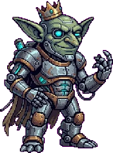
GROWING AN ACCOUNT
Robot goblin in metal armor wearing a small crown
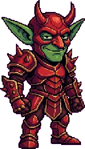
THE TRUTH
Goblin wearing red demon armor and a red demon mask
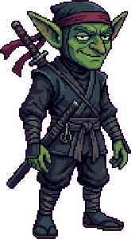
WRITING
Ninja master goblin in a dark ninja outfit with a headband
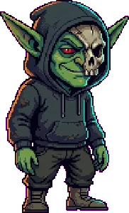
THE TRUTH
Creepy goblin with a scary half face mask and one red eye, dark hoodie

DINNER / GROCERIES
Goblin with many ear piercings and a lip piercing

WRITING
RED-skinned goblin with a scruffy look
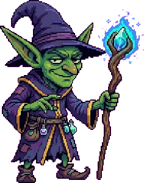
HOMEWORK
Wizard goblin with a pointy hat and a glowing staff
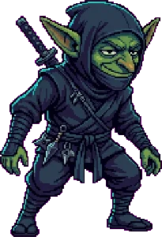
HOMEWORK
Ninja goblin in a black outfit

WRITING
Robot goblin in metal armor with green glowing eyes and an antenna

GROWING AN ACCOUNT
Snack goblin with pockets full of snacks, a septum piercing and holding a lighter
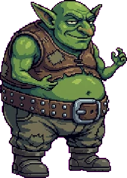
THE TRUTH
Big goblin with funny tiny hands

THE TRUTH
Undead zombie goblin with grey skin and stitches
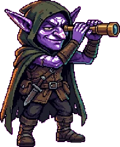
WORK
PURPLE-skinned scout goblin with a spyglass
THE TRUTH
ALBINO goblin with bone-white skin and pale eyes

DINNER / GROCERIES
Steampunk goblin with brass goggles and gears

THE TRUTH
Mob boss goblin with a big spiked boss crown and a fur collar
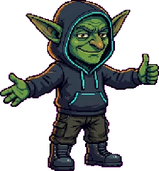
HOMEWORK
Friendly goblin giving a thumbs up and opening his arms for a hug
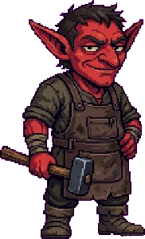
WRITING
RED-skinned blacksmith goblin with a leather apron and a hammer

WORK
Gangster boss goblin with a gold chain, sunglasses and a cane

HOMEWORK
Female goblin with a pink bow and lipstick
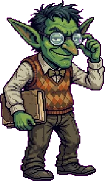
WORK
Nerd goblin with round glasses, green skin, sweater vest
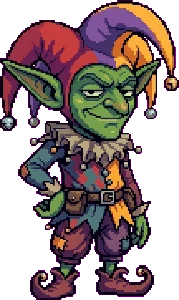
HOMEWORK
Jester goblin with a jingling jester hat
FIXING THINGS
Accountant goblin with suspenders, big glasses and a stack of coins
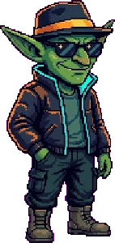
DINNER / GROCERIES
Cool goblin with sunglasses and a stylish hat
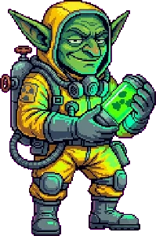
DINNER / GROCERIES
Nuclear worker goblin in a hazmat suit, glowing green reactor light
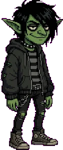
HOMEWORK
Emo goblin with messy black hair over one eye and eyeliner
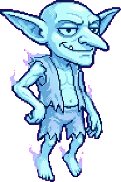
WRITING
GHOST goblin, translucent pale blue, floating
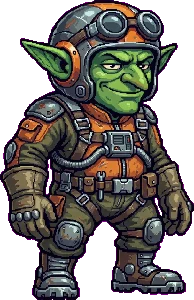
GROWING AN ACCOUNT
Mech pilot goblin with a pilot helmet and jumpsuit

FIXING THINGS
A tall DARK-GREEN goblin in a long blue coat and a wide hat, with a big sword on his back

THE TRUTH
Rich goblin with a crown and a bag of gold coins
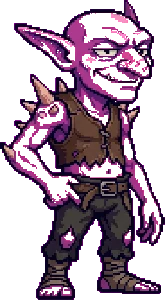
FIXING THINGS
PINK-skinned goblin with spikes on shoulders and back

GROWING AN ACCOUNT
Assassin goblin with a hood and a dagger
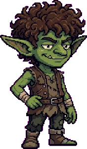
DINNER / GROCERIES
Goblin with big curly hair
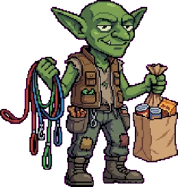
FIXING THINGS
Pet-sitter goblin holding several dog leashes and a grocery bag

DINNER / GROCERIES
Driver goblin driving a tiny go-kart
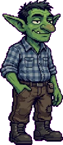
WRITING
A regular friendly goblin in a work shirt

GROWING AN ACCOUNT
Cyberpunk street goblin in a yellow jacket
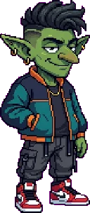
WRITING
A stylish goblin with a fresh haircut

WORK
A goblin in a backwards cap

HOMEWORK
A lazy sleepy goblin yawning
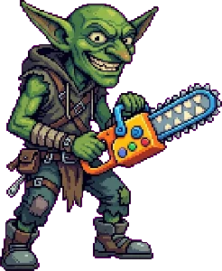
WORK
Chaotic goblin with a wild grin and a toy chainsaw

HOMEWORK
Crumzly: a small chubby goblin eating crumbs

FIXING THINGS
A goblin holding a big burger
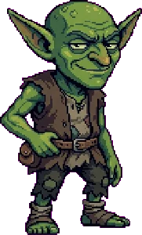
THE TRUTH
Classic plain goblin with a smug grin
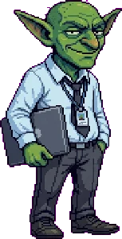
FIXING THINGS
Goblin office worker with a laptop under the arm

GROWING AN ACCOUNT
Excited goblin jumping

HOMEWORK
Happy goblin in a simple vest

GROWING AN ACCOUNT
Goblin pointing at himself proudly

HOMEWORK
Goblin wearing a dinosaur hoodie
Not a goblin yet? Comment the goblin you want to be on the latest episode and follow. You walk out of the next server.

That is João Gabriel. He runs JGA, a small studio in Sete Lagoas, Brazil, where he builds websites, apps and videos by talking to AI all day. The goblins are his. The pages are his. The dumb jokes are, sadly, also his.
Every prompt in the pack is short, plain and made to be tweaked. If it sounded like fluff, the goblins threw it in the trash.
The goblins read the logs. These three tickets show up every single day.

Ticket #001
You ask a simple thing and get a brochure. Polite, long and useless.
The fix: prompts that cut the filler and demand a straight answer.
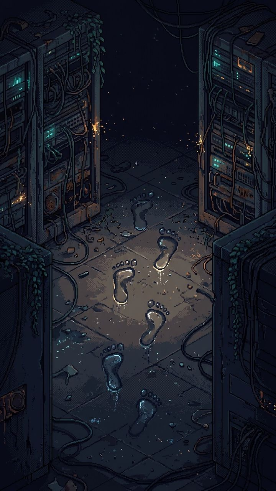
Ticket #002
Every new chat starts from zero. The AI guesses your goal, guesses wrong, and you pay in time.
The fix: a context loader that makes the AI ask first, then answer.

Ticket #003
The answer looks perfect, so you trust it. Later you find out it made things up.
The fix: a source check that marks what needs verifying before you use it.
One card per episode. Every ticket the goblins solve comes with something you can use. New card, new reel.

Episode 1 · “Zero”
10 copy-and-paste prompts. Fix lazy answers, load context, check sources, get clean formats.
Unlock it free
Episode 2 · “Six”
Six followers became goblins. Now the horde wants your ticket: what is the one boring task you wish AI would just do for you? Answer in one word on the reel.
Answer on Instagram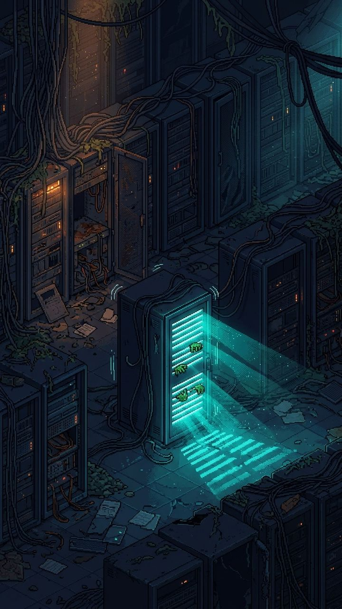
Episode 3 · “The Flood”
You sent the boring tasks. The horde turned them into 7 prompts you can paste into any AI.
Unlock it freeEpisode 3 · ticket closed
You told the horde which boring tasks AI should just do. The goblins wrote one prompt for each: work, homework, dinner, writing, the truth, fixing things and growing an account. Drop your details and they open right here.
Tap Copy, paste into ChatGPT, Claude, Gemini or any chat AI, then replace the [brackets].
Work: messages piling up.
Here are the messages I need to deal with: [paste emails or chats]. Sort them into three groups: REPLY TODAY, CAN WAIT, IGNORE. For every REPLY TODAY, write a short reply in a plain, friendly tone (4 sentences max). Then give me a to-do list of everything I promised someone. If a reply needs a fact I did not give you, write [ASK] instead of guessing.
Homework: learn it, don't fake it.
I am studying [topic] for [class or level]. Explain it in plain words in under 150 words, with one everyday example. Then quiz me with 3 questions, one at a time. Wait for my answer before the next one. Never give the answer before I try. If I get it wrong, give me a hint first. At the end, tell me the one part I should review again.
Dinner and groceries.
Here is what I have at home: [list the food you have, or attach a photo of your fridge if your AI accepts images]. I have [minutes] minutes and these tools: [stove, oven, microwave]. Give me 3 dinner ideas that use mostly what I already have, each in 6 short steps or fewer. Then write a grocery list only for what is missing, grouped by store section.
Writing: notes to first draft.
Topic: [topic]. Reader: [who will read it]. Length: [number] words. Here are my messy notes: [paste notes]. Write a first draft that keeps my points and my order. Plain words, no filler, no long intro. Then list the 3 weakest spots in the draft and ask me one question about each.
Find out what is true.
Here is a claim, post or article: [paste it]. List every factual claim in it. Mark each one SURE, PROBABLY or CHECK THIS. For every CHECK THIS, tell me what kind of source would confirm it and what to search for. Do not invent sources or links. If you are not sure, say so.
Something is broken.
Something is broken: [device, app or thing]. What happens: [describe the problem]. What I already tried: [list]. Ask me up to 3 questions first. Then give me checks from easiest to hardest, one at a time, and wait for my result after each one. Tell me clearly when it is time to stop and call a professional.
Grow an account.
My account is about [topic], for [who follows it]. Give me 10 post ideas, each one answering a real question this audience has. For each idea, write a hook under 8 words and the one thing the viewer learns. No hype words. If an idea needs a fact, mark it [CHECK].
AI makes mistakes. Read the answer before you use it. No paid tool needed.
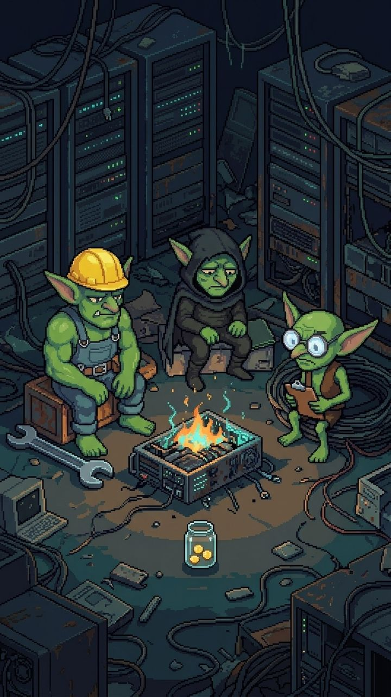
Last call
Join the horde. Drop your details and the Goblin Prompt Pack opens right here, right now: 10 prompts, ready to copy.
Tap Copy, paste into your AI, replace the [brackets]. Works with any chat AI.
Rewrite weak prompts.
Act as a prompt editor. Here is my prompt: [paste prompt]. Tell me in 3 bullets what is vague or missing. Then rewrite it so a stranger could follow it. Keep my goal. Do not answer the prompt itself.
Stop re-explaining.
Here is the background: [paste what the AI needs to know]. My goal is [goal]. Before you answer, ask me up to 5 questions you need answered. Wait for my replies, then do the task.
Cut the brochure voice.
Rewrite the text below. Remove filler, hype and anything that does not add information. Use short sentences and plain words. Keep every fact. Text: [paste text]
Know what to verify.
List every factual claim in your last answer. Mark each one: SURE, PROBABLY, or CHECK THIS. For every CHECK THIS, say what kind of source I should look at to confirm it. If you made up anything, say so.
Find the holes.
Here is my plan: [plan]. Argue against it. Give me the 3 strongest reasons it could fail, what each one would cost me, and one cheap way to test each before I commit.
Big task, small steps.
I want to [goal] by [date]. Break it into steps of 30 minutes or less. After each step, add a checkpoint: how I will know it worked. Put the riskiest step first.
Get the shape you need.
Answer only in this format: [table with columns A, B, C / bullet list of 5 / JSON with keys x, y]. No intro, no closing sentence. If information is missing, write "unknown" instead of guessing.
Sound like you.
Here are two samples of my writing: [sample 1] [sample 2]. Describe my voice in 5 traits. Then write [new text] in that voice. Avoid words I never use.
Long text to action.
Summarize the text below into three parts: DECISIONS made, OPEN QUESTIONS, and NEXT ACTIONS with an owner for each. Max 150 words. Text: [paste text]
Fix code or errors.
I get this error: [paste error]. Code: [paste code]. First explain in plain words what is going wrong. Then give the smallest change that fixes it. Do not rewrite the whole file.
Prompts are starting points. Always read the answer before you use it.